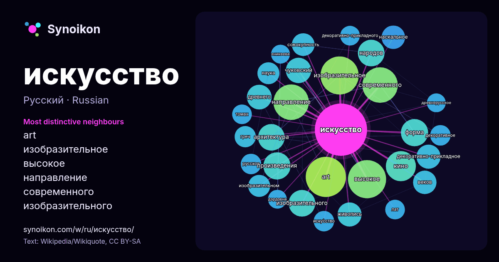

Русский · популярное слово
искусство
“art” · Слова вокруг него в 1565 вхождениях из Википедии, Wikiquote.

Самые характерные соседи
- art 47×
- изобразительное 45×
- высокое 40×
- направление 30×
- современного 25×
- изобразительного 21×
- чуковский 21×
- декоративно-прикладное 19×
- архитектура 19×
- наскальное 18×
- живопись 17×
- древнего 16×
- форма 16×
- изобразительном 16×
- совокупность 15×
- кино 15×
- греч 15×
- народов 14×
- иску́сство 14×
- наука 14×
× = во сколько раз чаще, чем в обычном тексте Википедии.
Самые частые соседи
- art 50
- века 45
- высокое 45
- изобразительное 45
- направление 39
- современного 39
- кино 28
- истории 26
- произведения 23
- форма 23
- архитектура 22
- изобразительного 22
- история 22
- народов 22
- период 22
- видов 20
- войны 20
- чуковский 20
- древнего 19
- которое 19
В контексте
- Искусство Древнего Египта, Эгейская цивилизация, Искусство Древней Греции, Эллинизм, Этрусское искусство, Скифы, Искусство Урарту Основы искусства в Wikipedia snippets · Искусство
- Актёрское иску́сство (устар. «лицедейство») — профессиональная творческая деятельность в области исполнительских искусств, состоящая в создании сценических Wikipedia snippets · Актёрское искусство
- «Искусство для искусства» (фр. l'art pour l'art) — концепция, подчеркивающая автономную ценность искусства и рассматривающая озабоченность моралью, пол … Wikipedia snippets · Искусство для искусства
- Аполлон. Изобразительное и декоративное искусство. Архитектура. — М.: НИИ теории и истории изобразительных искусств РАХ—Эллис Лак, 1997. — С. 14, 351 Власов Wikipedia snippets · Авангард (искусство)
- очерки. — М.: Искусство, 1958. — 365 с. Уварова Е. Д. Эстрадный театр: Миниатюры, обозрения, мюзик-холлы (1917—1945). — М.: Искусство, 1983. — 320 с Wikipedia snippets · Театр
- боевое искусство, хотя в Южной Корее по числу занимающихся занимает третье место после тхэквондо и дзюдо. Кэндо — современное японское боевое искусство фехтования Wikipedia snippets · Боевые искусства
- журнале, статья о роде искусства называется Киноискусство. «Иску́сство кино́» — советский и российский журнал, посвящённый искусству кинематографа, публикующий Wikipedia snippets · Искусство кино
- искусством понимают искусство, восходящее к модернизму, или находящееся в противоречии с этим явлением, отделяя его от понятия «актуальное искусство» Wikipedia snippets · Современное искусство
Другие слова
- бог
- власть
- вода
- деньги
- жизнь
- здоровье
- золото
- истина
- история
- климат
- кошка
- мост
- наука
- пища
- поезд
- природа
- работа
- семья
- сердце
- смерть
- собака
- язык
Предварительно рассчитано 2026-10-09 с настройками по умолчанию (±5 слов, средний корпус). Интерактивная карта может обновить данные в реальном времени.
Интерфейс переведён машинно; исправления приветствуются.